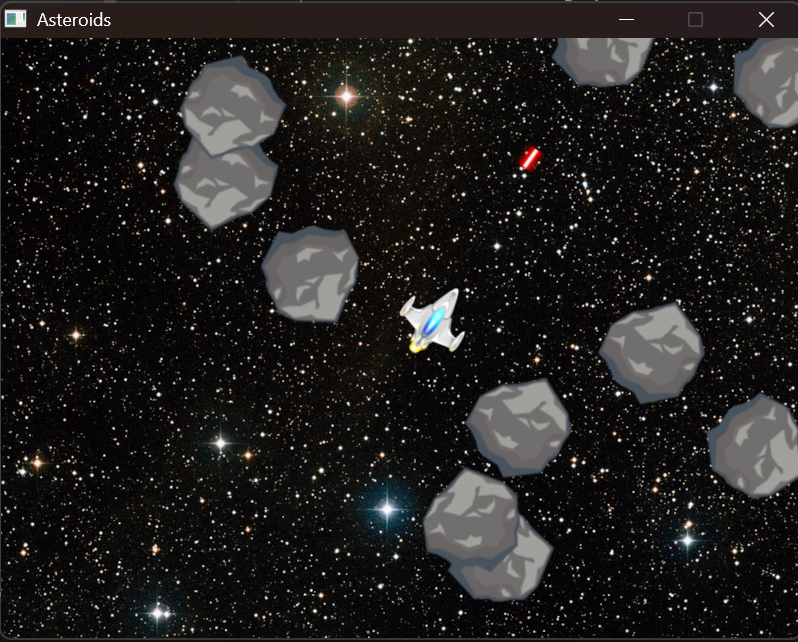
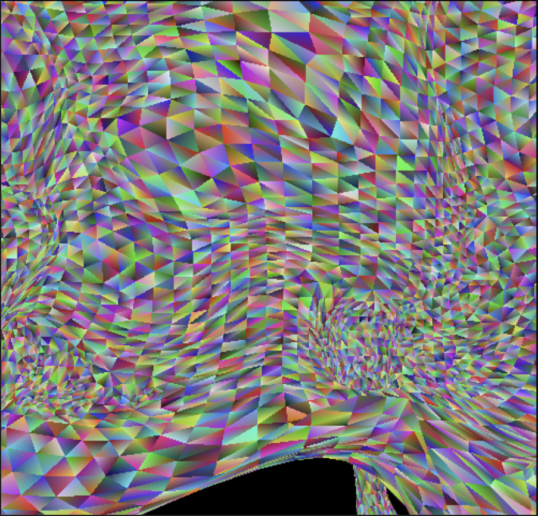
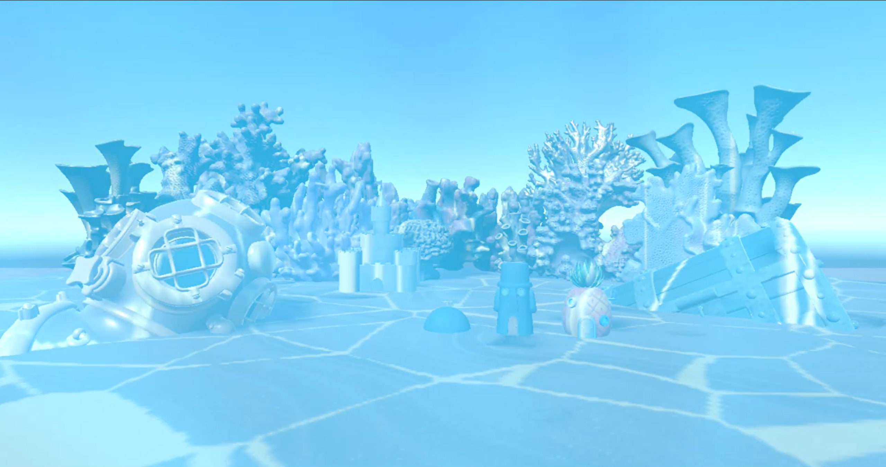

In this project I replicated the beloved game Asteroids using C++ and SDL3 (Code snippet shown below).

void Game::LoadData()
{
//Background
Actor* bgActor = CreateActor();
bgActor->GetTransform().SetPosition({400, 300});
SpriteComponent* bgSprite = bgActor->CreateComponent();
bgSprite->SetTexture(GetTexture("Assets/Stars.png"));
//make sure it is draw on the bottom (any negative number works, really)
bgSprite->SetDrawOrder(-42);
//Ship
mShip = CreateActor();
mShip->GetTransform().SetPosition({WINDOW_WIDTH / 2, WINDOW_HEIGHT / 2});
//Create 10 asteroids
for (int i = 0; i < 10; i++)
{
CreateActor();
}
}
void Game::UnloadData()
{
for (int i = 0; i < mActors.size(); i++)
{
delete mActors[i];
}
mActors.clear();
//Delete textures
for (auto pair : mTextures)
{
SDL_DestroyTexture(pair.second);
}
mTextures.clear();
}
SDL_Texture* Game::GetTexture(std::string filename)
{
/*
*This iterator is required to that in can store the iterator returned by find() function of hashtable.
*Remember that find() function returns an iterator if the key is found and a .end() iterator if it's not found.
*/
auto it = mTextures.find(filename);
if (it != mTextures.end())
{
return mTextures[filename];
}
else
{
//If that texture does not already exist in the map, then you first need to load the texture with that file name.
const char* cStringFileName = filename.c_str();
SDL_Surface* tempSurface = IMG_Load(cStringFileName);
if (tempSurface != nullptr)
{
SDL_Texture* tempTexture = SDL_CreateTextureFromSurface(myRenderer, tempSurface);
if (tempTexture != nullptr)
{
//Free the SDL_Surface*
SDL_DestroySurface(tempSurface);
//Add the SDL_Texture to the map.
mTextures[filename] = tempTexture;
return tempTexture;
}
else
{
SDL_Log("ERROR: Texture %s failed to load!!", cStringFileName);
return nullptr;
}
}
else
{
SDL_Log("ERROR: Texture %s failed to load!", cStringFileName);
return nullptr;
}
}
}
In this project I built a rasterizer. The project was developed in C++ (Code snippet shown below).

void initialize_render(driver_state& state, int width, int height)
{
state.image_width=width;
state.image_height=height;
state.image_color= new pixel[width*height];
state.image_depth= new float[width*height];
std::cout<<"TODO: allocate and initialize state.image_color and state.image_depth."<::max();
}
}
void render(driver_state& state, render_type type)
{
const data_geometry* tri[3];
switch (type) {
case render_type::triangle: {
data_geometry dummytri[3];
int count = 0;
data_vertex v;
for(int i = 0; i < state.num_vertices; i++) {
v.data = new float[state.floats_per_vertex];
dummytri[count].data = new float[MAX_FLOATS_PER_VERTEX];
for(int j = 0; j < state.floats_per_vertex; j++) {
v.data[j] = state.vertex_data[i*state.floats_per_vertex+j];
}
state.vertex_shader(v, dummytri[count], state.uniform_data);
//Re homogenize here: BUT DONT REHOMOGENIZE W!
if(dummytri[count].gl_Position[3] != 0) {
dummytri[count].gl_Position[0]/=dummytri[count].gl_Position[3];
dummytri[count].gl_Position[1]/=dummytri[count].gl_Position[3];
dummytri[count].gl_Position[2]/=dummytri[count].gl_Position[3];
}
tri[count] = &dummytri[count];
count++;
if(count == 3) {
rasterize_triangle(state, *tri[0], *tri[1], *tri[2]);
count = 0;
}
}
break;
}
...
}
In this project I built an underwater scene, simulating caustics with worley noise as a 2D texture and god rays with ray marching. The project was developed with C# in Unity (Code snippet shown below).

void Start()
{
noise = new float[sizeX, sizeY, sizeZ];
// Generate Worley feature points
Vector3[] points = new Vector3[numFeaturePoints];
for (int i = 0; i < numFeaturePoints; i++)
{
points[i] = new Vector3(
Random.Range(0f, sizeX),
Random.Range(0f, sizeY),
Random.Range(0f, sizeZ)
);
}
// Compute Worley (F2 - F1)
for (int x = 0; x < sizeX; x++)
{
for (int y = 0; y < sizeY; y++)
{
for (int z = 0; z < sizeZ; z++)
{
float f1 = float.MaxValue;
float f2 = float.MaxValue;
Vector3 p = new Vector3(x, y, z);
foreach (var fp in points)
{
float d = Vector3.Distance(p, fp);
if (d < f1)
{
f2 = f1;
f1 = d;
}
else if (d < f2)
{
f2 = d;
}
}
float w = Mathf.Clamp01(f2 - f1);
w = Mathf.Pow(w, 6f);
noise[x, y, z] = w;
}
}
}
// Create Texture (only X/Z resolution matters visually)
sliceTexture = new Texture2D(sizeX, sizeZ);
sliceTexture.filterMode = FilterMode.Trilinear;
sliceTexture.anisoLevel = 8;
// Setup Quad
quad.transform.position = Vector3.zero;
quad.transform.rotation = Quaternion.Euler(90, 0, 0);
quad.transform.localScale = new Vector3(10f, 10f, 1f);
displayMaterial = quad.GetComponent().material;
displayMaterial.SetTexture("_BaseMap", sliceTexture);
displayMaterial.SetTextureScale("_BaseMap", Vector2.one);
}